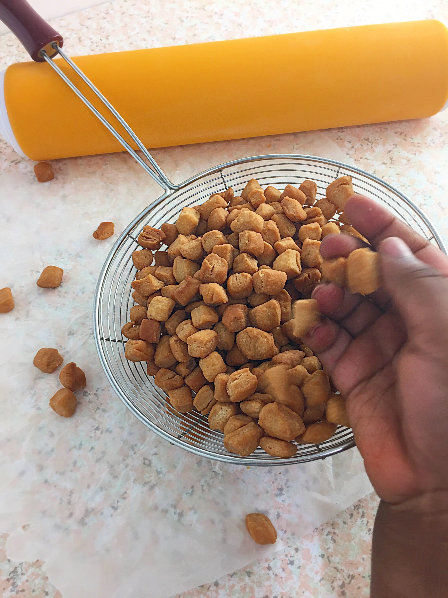

CHINCHIN Recipes

Description
This is the recipe for Nigerian chinchin
Ingredients
- 280g (1 ¾ cup + 2 Tbsp) all purpose flour
- 82g (⅓ cup) granulated sugar
- 57g (4 Tbsp) salted butter
- ½ tsp baking powder
- ½ tsp ground nutmeg
- 1 large egg
- ¼ cup evaporated milk
- Oil for deep frying